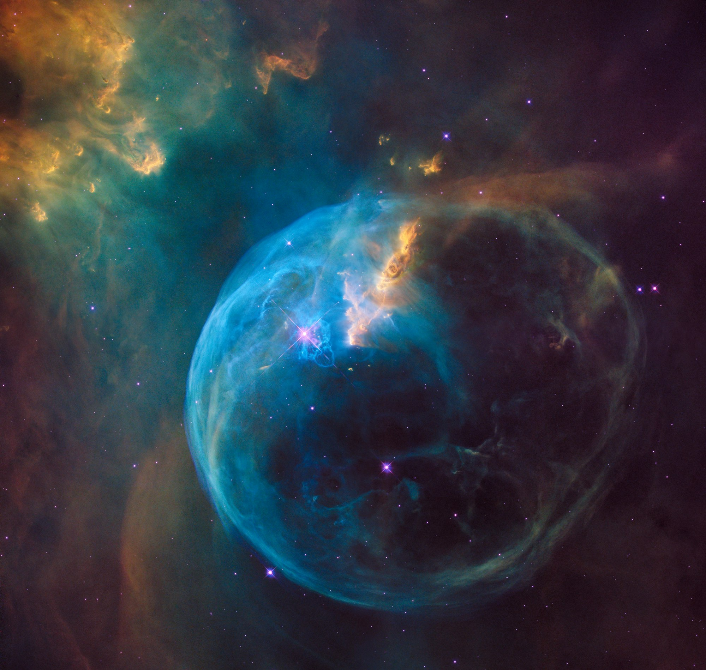

Yama · The Fourth Principle · 04
Brahmacarya
Remaining in Brahma
To move among finite things and never once mistake them for finite — to feel the Cosmic behind every object you touch.
The word
To remain attached to Brahma.
चर्य
Carya
To move, to range, to keep dealing with the world. The mind does not stop. It travels from one object to the next, all day, all life. Carya is simply that motion.
ब्रह्मचर्य
Brahmacarya
To range within Brahma — to keep moving among objects while never leaving the Cosmic. The motion stays; what changes is what you take each object to be.
So the practice is not to stop the mind from wandering. It is to change what it lands on.
The crude habit
Take a thing as a thing, and the mind goes crude.
When we set out to do or to want anything in the world, we look on the object we meet as a crude, finite entity — a thing to be had. Held in that constant aspiration for material achievement, the mind is so engrossed in objects that consciousness itself becomes crude. Nothing is wrong with the object. The crudity is in how it is seen.

The ideation
Treat each object as an expression of Brahma.
This is the whole of the sādhaná: to meet every object, not as a crude form, but as a different face of the Infinite. Then, even as the mind wanders from one object to another, it never detaches from Brahma — because the Cosmic feeling is carried into each and every thing it touches.
What it turns into
becomes
And Káma — desire for finite objects — becomes Prema, desire for the Infinite. The wanting is not killed. Its aim is lifted.
The great misreading
It has nothing to do with the preservation of semen.
What it is not
The bluff of so-called celibacy
Neither the word Brahma nor the word carya has any relevance to semen. Even physiologically, such preservation is a bluff — short of maiming, it cannot be observed. Suppression only roughens the body and turns the thwarted desire into a fiercer anger.
Where it came from
A machinery of exploitation
When self-serving monks declared married life a sin, they kept ordinary people feeling maimed and inferior — easy to exploit. But Shiva, Viśńu, Krśńa were worldly people; the Puráńas name their wives and children. Marriage is a natural function, like bath, food, sleep.
Control does not mean killing desire. Control means abiding by the laws of nature.
The sūtra
Brahmańi vicarańam iti Brahmacaryam.
“Ranging within Brahma — that is Brahmacarya.” To want is no sin; to want without control causes disease, as surely as overeating does. The desire is kept, and only its movement is brought back under the laws of nature.
What it rests on
Dharma is founded on Satya.
“Where there is no satya, there is no dharma.” The peculiar reading of Brahmacarya may contain anything and everything except truth — so it holds no dharma, no Brahma. Humanity progresses by accepting what is true. To deny the simple truth of practical life may be a privilege of parasites; it is not the path of a sādhaka.
Where it leads
Move through everything; leave nothing behind.
Where Asteya guards what passes between people, Brahmacarya governs what passes within you — the subjective grip on every object you enjoy. Its outward face is Aparigraha, the same restraint turned toward what you hold. Range as widely as you like. Only carry the Cosmic with you, so that the mind, wandering, never once leaves home.
A Guide to Human Conduct · after Shrii Shrii Ánandamúrti